Units 3 & 5
Marketing The Mummy
The two main ideals around the marketing for the movie The Mummy were to advertise and generate publicity.
To advertise, they created tv adverts and posters alongside releasing merchandise. The posters highlighted the ancient Egyptian themes, showcasing the mummy and the adventurous tone without revealing too much of the movie to intrigue viewers.
For the TV adverts, they focused on more dramatic and romantic shots from the movie to target specific demographics. Special effects, such as the sandstorm, were prominently featured to showcase its visual appeal.
Universal Pictures also distributed t-shirts as a part of promotional giveaways. These were often handed out at special events, radio contests, and early screenings. The shirts featured iconic visuals, like the film’s logo, the "face in the sandstorm" design, or images of Imhotep, instantly recognizable symbols tied to the movie.
The movie’s target audience was 12 to 24-year-olds. Due to this, the trailer is designed as an action-packed experience to keep viewers engaged and intrigued. The film's romantic elements appeal to women, while its action and adventure aspects cater to men.
Modern movie marketing employs tactics that are dramatically different from those used in the past. These changes are driven by advancements in technology, evolving consumer behaviour, and the increasing dominance of digital platforms. In modern times, marketing tactics typically revolve around social media adverts and word of mouth, compared to traditional posters and tv adverts.
Types of Advertising
There are many forms of advertising. These include: public service advertising (PSAs), product placement, display advertising, social media advertising, direct mail, mobile advertising, print advertising, paid search advertising, outside advertising, television advertising.
Public Service Advertising
Public service advertising (PSAs) is a form of advertising involving informing people of issues in the world to help keep people safe.
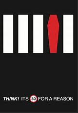This advert depicts a zebra crossing with one of the stripes being a coffin, implying that speeding can lead to deaths. This advert is target towards people that drive, and can help increase pedestrian safety.
Product Placement
Product placement is a form of advertising where a real-world product is inserted into a movie scene to help entice more people to buy the product.
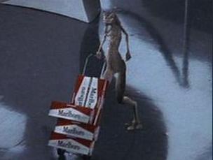This advert is targeted towards fans of the movie, as they now assosciate the product with that movie. However, this can ruin the immersion of the movie as it now create a bridge between the real world and the movie universe.
Display Advertising
Display advertising is a form of advertising involving creating banner ads for the product, such as on billboards.
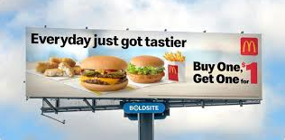This form of advert is targeted towards everyone, as it reaches such a large demographic by being placed outside. Although it can drum up sales for the product, it may also annoy people seeing the advert so much and prevent them from buying it.
Social Media Advertising
Social media advertising is a form of advertising that involves the use of social media platforms such as Instagram, Tiktok and Facebook to promote and market a product.
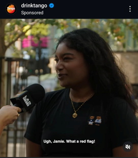This advert is targeted to anyone who uses social media, usually between the ages of 12-34. This can help spread awareness of the product, although it can also spread negative word if the product is generally disliked.
Direct Mail
Direct mail is a form of advertising that involves using physical mail, such as letters or leaflets, to promote a product.
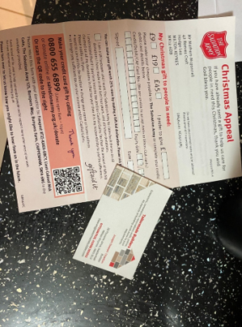This type of advert is typically targeted towards the older generation, which can help spread to more demographics. However it can cause littering due to people not recycling them.
Mobile Advertising
Mobile advertising is a form of advertising that involves using mobile platforms such as social media to leverage towards younger audiences.
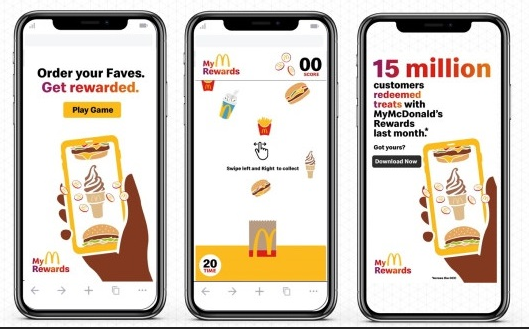This type of advert is targeted towards younger people. This can spready quickly but carries the same risks of negative word as social media advertising.
Print Advertising
Print advertising is a form of advertising that uses paper forms of adverts, such as in newspapers.
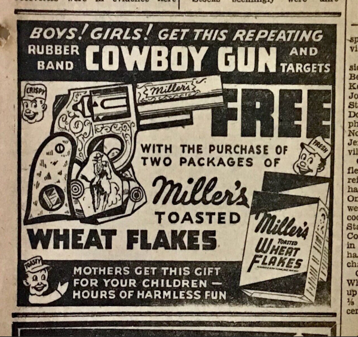This targets towards the older generation and can help reach a larger demographic. However, people then may feel negatively towards the advertised product as they may feel as though their source of current events is being interrupted by the product.
Paid Search Advertising
Paid search advertising is a form of advertising that pays to appear nearer the top of searches if their search is relevant.
This is targeted towards a much larger demographic as it is targeted to anyone that is searching for that product. This can help reach a large audience; however, people may feel annoyed at the adverts being pushy and in the way of their search.
Outside Advertising
Outside advertising is a form of advertising that is displayed outside, such as on a billboard.
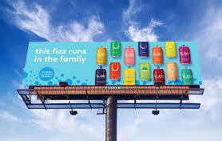This is targeted towards anyone who sees the advert. This can attract more customers; however, people may think it ruins the scenery.
Television Advertising
Television advertising is a form of advertising displayed on television.
This form of advert is targeted towards anyone that watches Live TV. Although it can bring in a large number of people, it is also unskipppable which may annoy people
Schedule
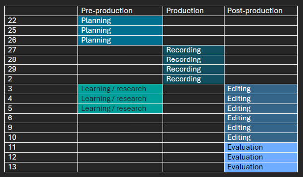Trailers Workbook
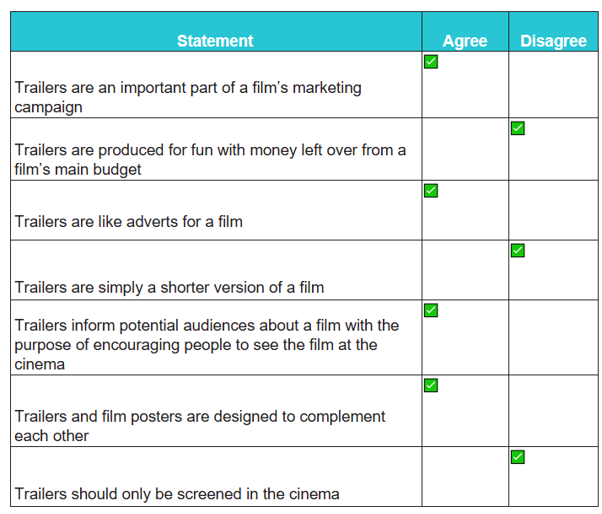 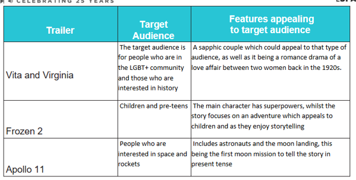 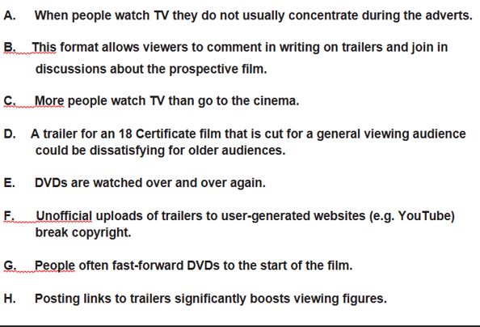 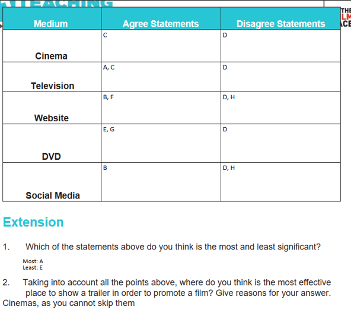Sound List
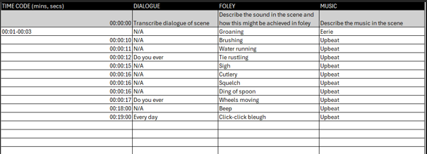My Trailer
Evaluation
For my project, I decided to do the Shaun of The Dead trailer as it is a movie I thoroughly enjoy. I chose a section from the trailer with a lot of sound effects, as most of the trailer only has dialogue. That section was reasonably hard to locate as my mind automatically tunes out sound effects and only listens for dialogue.
Pre-Production
For my pre-production, I created a schedule and spreadsheet for the sounds I would recreate. I also researched into the foley sounds themselves and how to create them.